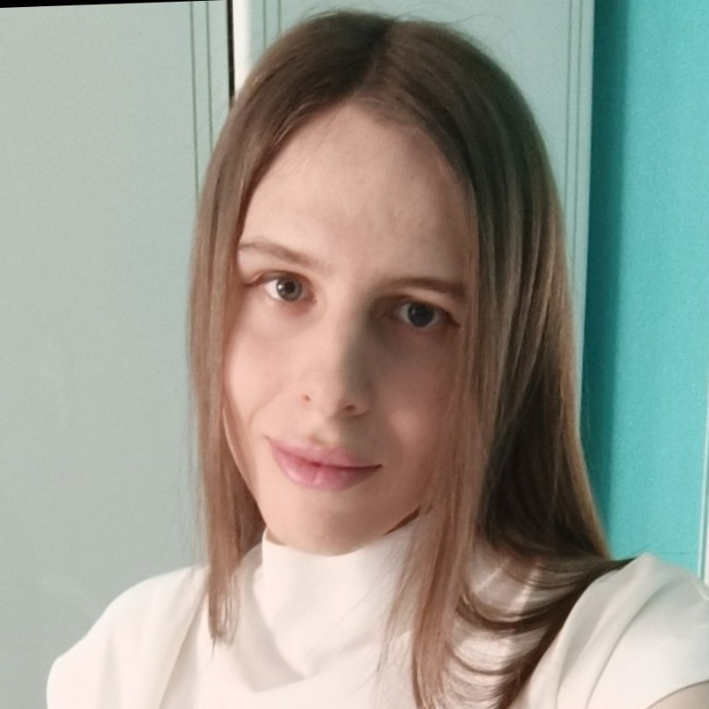
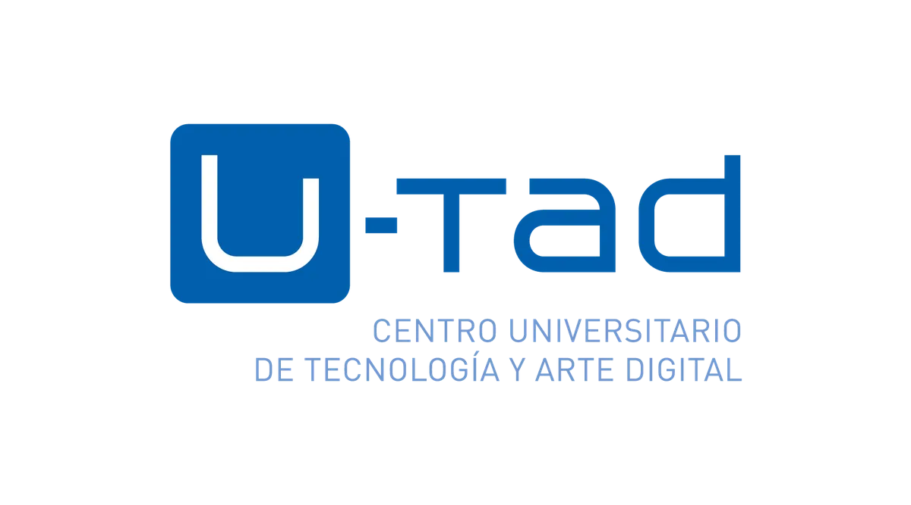
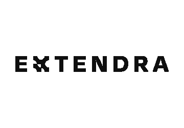

Soy Eris Serrano Marín, una programadora de la Región de Murcia, en España.
Programadora C++ especializada en la creación de experiencias en Realidad Virtual
Soy una Ingeniera Multimedia con más de cuatro años de experiencia como programadora.
Durante mi carrera profesional y mis estudios he trabajado con múltiples herramientas y lenguajes, especializándome sobre todo con Unreal Engine y Unity, y los lenguajes C++ y C#.
Durante mi carrera profesional y mis estudios he trabajado con múltiples herramientas y lenguajes, especializándome sobre todo con Unreal Engine y Unity, y los lenguajes C++ y C#.
Me apasionan especialmente el desarrollo de videojuegos y las realidades extendidas, aunque siempre trato de expandir mis horizontes y probar nuevas tecnologías y lenguajes para continuar creciendo como programadora.
Formación académica

Máster en Computación Gráfica, Realidad Virtual y Simulación
2021-2022
U-tad
Mostrar más
Especialización en la programación de motores gráficos y GPUs, simulaciones físicas con Houdini y desarrollo de aplicaciones AR/VR con Unity y Unreal Engine.
Nota media: 9.73
Especialización en la programación de motores gráficos y GPUs, simulaciones físicas con Houdini y desarrollo de aplicaciones AR/VR con Unity y Unreal Engine.
Nota media: 9.73
Nota media: 9.73
Grado en Ingeniería Multimedia
2015-2019
Universitat de València
Mostrar más
Durante el grado se nos formó en múltiples lenguajes de programación y algoritmia, haciéndose un mayor enfoque en la programación gráfica y en tecnologías interactivas y multimodales.
Nota media: 8.93
Durante el grado se nos formó en múltiples lenguajes de programación y algoritmia, haciéndose un mayor enfoque en la programación gráfica y en tecnologías interactivas y multimodales.
Nota media: 8.93
Nota media: 8.93
Experiencia laboral

La Frontera VR / Extendra
Sep. 2022 - Feb. 2025
C++ · Unreal Engine · VR/AR
Mostrar más
Ocupé el puesto de Programadora C++, desarrollando aplicaciones de Realidad Virtual y Aumentada a medida para empresas con Unreal Engine, aprovechando la potencia del motor para crear experiencias inmersivas de gran realismo.
En la empresa participé en el desarrollo de varios proyectos de perfil elevado. Mi responsabilidad en los mismos como programadora C++ era dar forma a las funcionalidades e interacciones deseadas por el cliente. En los desarrollos me familiaricé con tecnologías como el multijugador, chats de voz o seguimiento de manos.
Los equipos eran multidisciplinares, trabajando conjuntamente con artistas 3D o programadores web para dar forma a los proyectos. En los desarrollos seguíamos la metodología ágil Kanban.
También realizamos un esfuerzo para mantener una serie de plugins propios modulares, de manera que la tecnología desarrollada para un proyecto pudiera agilizar desarrollos futuros, siendo esencial mantener un código limpio y ordenado a la hora de programar.
Ocupé el puesto de Programadora C++, desarrollando aplicaciones de Realidad Virtual y Aumentada a medida para empresas con Unreal Engine, aprovechando la potencia del motor para crear experiencias inmersivas de gran realismo.
Mostrar más
En la empresa participé en el desarrollo de varios proyectos de perfil elevado. Mi responsabilidad en los mismos como programadora C++ era dar forma a las funcionalidades e interacciones deseadas por el cliente. En los desarrollos me familiaricé con tecnologías como el multijugador, chats de voz o seguimiento de manos.
Los equipos eran multidisciplinares, trabajando conjuntamente con artistas 3D o programadores web para dar forma a los proyectos. En los desarrollos seguíamos la metodología ágil Kanban.
También realizamos un esfuerzo para mantener una serie de plugins propios modulares, de manera que la tecnología desarrollada para un proyecto pudiera agilizar desarrollos futuros, siendo esencial mantener un código limpio y ordenado a la hora de programar.
NTT Data
Feb. 2020 - Sep. 2022
Python · Shell · SQL · Java
Mostrar más
Parte del equipo de desarrollo y mantenimiento para los procesos de facturación de una empresa puntera en el sector de las comunicaciones. Comencé en la compañía como Junior, ascendiendo posteriormente en Febrero de 2021 tras tomar mayores responsabilidades dentro del equipo.
En el equipo gestionábamos 3 aplicaciones diferentes en el proceso de facturación, que se ocupaban de:
- Generación de los ficheros XML y PDF de las facturas emitidas.
- Volcado de los datos de la factura en las BBDD.
- Un gestor documental para el archivado de los documentos.
Como parte del trabajo también se realizaban guardias fuera del horario laboral para corregir cualquier problema crítico que pudiese ocurrir durante los ciclos de facturación, los cuales tenían gran urgencia. Realizar estas guardias puso a prueba mis habilidades de resolución de problemas, ayudándome a desarrollarlas enormemente.
Parte del equipo de desarrollo y mantenimiento para los procesos de facturación de una empresa puntera en el sector de las comunicaciones. Comencé en la compañía como Junior, ascendiendo posteriormente en Febrero de 2021 tras tomar mayores responsabilidades dentro del equipo.
Mostrar más
En el equipo gestionábamos 3 aplicaciones diferentes en el proceso de facturación, que se ocupaban de:
- Generación de los ficheros XML y PDF de las facturas emitidas.
- Volcado de los datos de la factura en las BBDD.
- Un gestor documental para el archivado de los documentos.
Como parte del trabajo también se realizaban guardias fuera del horario laboral para corregir cualquier problema crítico que pudiese ocurrir durante los ciclos de facturación, los cuales tenían gran urgencia. Realizar estas guardias puso a prueba mis habilidades de resolución de problemas, ayudándome a desarrollarlas enormemente.

LaNube de Ideas
Oct. 2018 - Dic. 2018
HTML · CSS · JS · SEO
Mostrar más
Desempeñé el puesto de programadora web en prácticas en esta empresa de diseño web y branding, convirtiendo los diseños a código HTML y CSS compatible con Wordpress. También me encargué de la gestión en Wordpress de las webs de clientes y de su posicionamiento en los buscadores (SEO).
Desempeñé el puesto de programadora web en prácticas en esta empresa de diseño web y branding, convirtiendo los diseños a código HTML y CSS compatible con Wordpress. También me encargué de la gestión en Wordpress de las webs de clientes y de su posicionamiento en los buscadores (SEO).
Proyectos
Freelance
Personal
Universidad
Empresa
Freelance
Personal
Universidad
Empresa